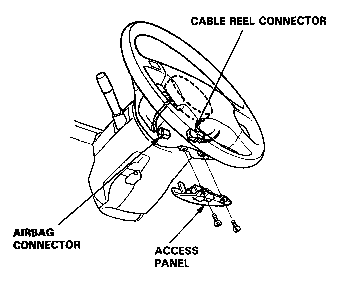
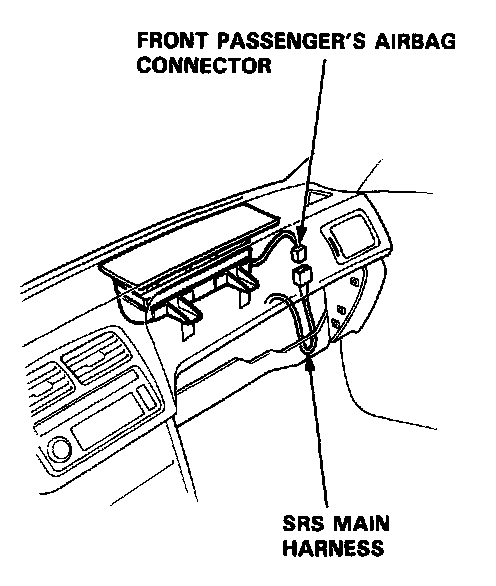
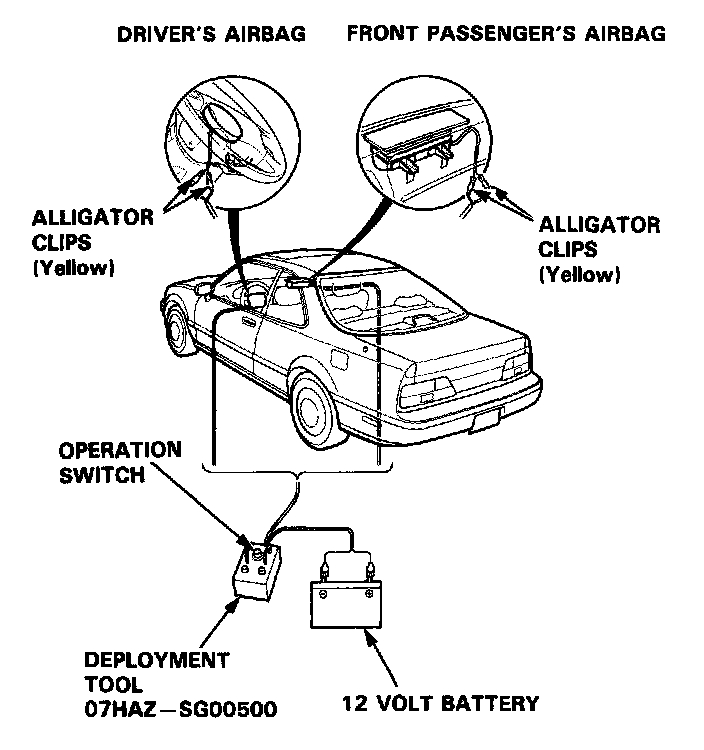
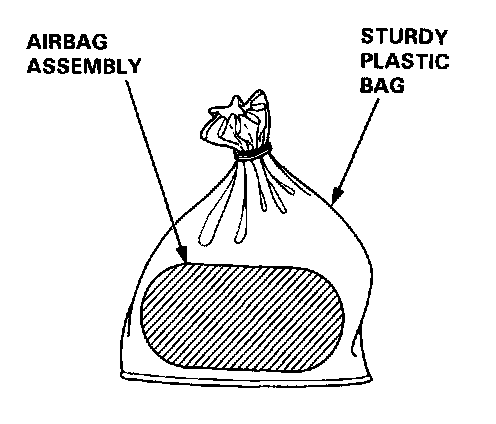
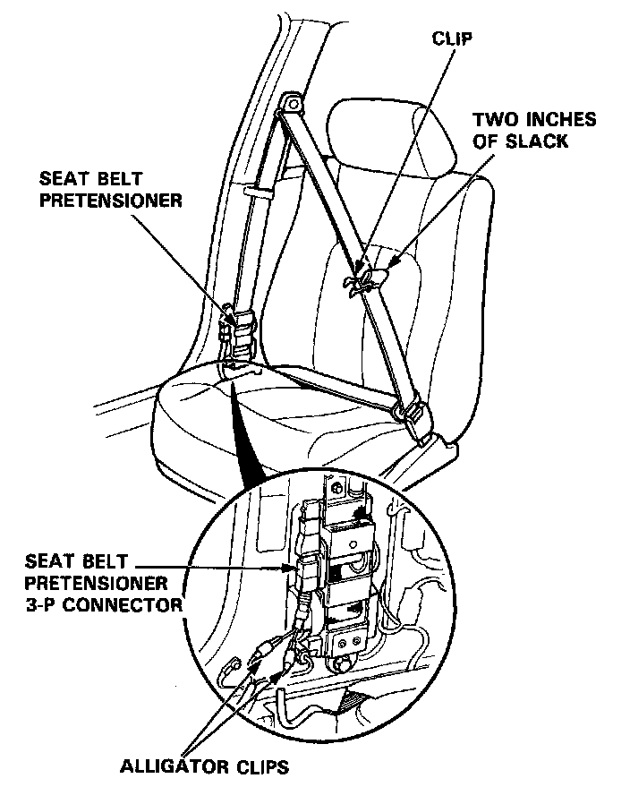
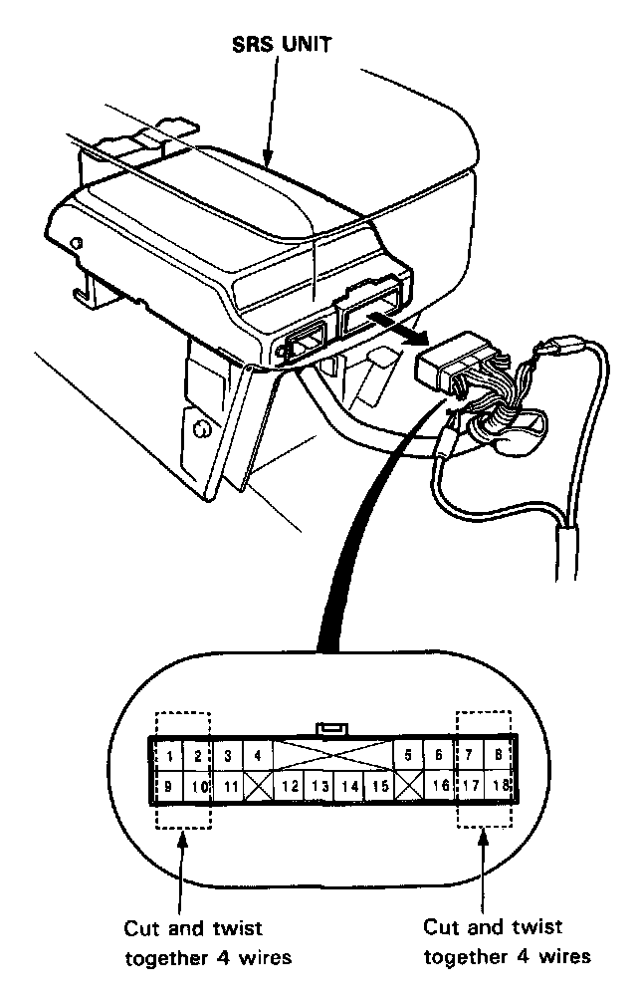
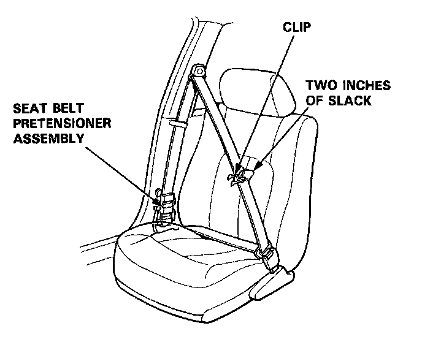
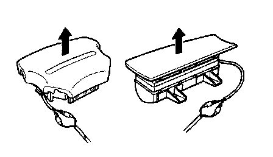

Air Bag and Seat Belt Pretensioner Disposal
Airbag/Seat Belt Pretensioner Disposal
Before scrapping any airbag(s) or seat belt pretensioners (including those in a whole car to be scrapped), the airbag(s) must be deployed and the seat belt pretensioners must be triggered. If the car is still within the warranty period, before deploying the airbag(s) or triggering the seat belt pretensioners, the Acura District Service Manager must give approval and/or special instruction. Only after the airbag is already deployed or a seat belt pretensioner is triggered (as the result of vehicle collision, for example), can the normal scrapping procedure be done.
If the airbag(s) or the seat belt pretensioners appear intact (not deployed or triggered), treat them with extreme caution.
Follow the procedure, described below.
Deploying the Airbag(s): In-car
NOTE: If an SRS car is to be entirely scrapped, its airbag(s) should be deployed while still in the car. The airbag(s) should not be considered as salvageable parts and should never be installed in another car.
WARNING: Confirm that each airbag assembly is securely mounted; otherwise. severe personal injury could result from deployment.
1. Disconnect both the negative cable and positive cable from the battery.
2. Confirm that the special tool is functioning properly by following the check procedure on the label of the tool set box, or the "Deployment Tool: Check Procedure" at the end of this article.
Driver's Airbag:
3. Remove the access panel, then disconnect the connector between the airbag and the cable reel.

Front Passenger's Airbag:
4. Remove the glove box, then disconnect the connector between the front passenger's airbag and SRS main harness.

5. Cut off the driver's airbag connector, then strip the wire ends and connect the special tool alligator clips to them. Place the special tool approximately thirty feet away from the airbag.

6. Connect a 12 volt battery to the tool:
- If the green light on the tool goes on, the airbag igniter circuit is defective and cannot be deployed. Go to Damaged Airbag Special Procedure.
- If the red light on the tool goes on, the airbag is ready to be deployed.
7. Push the tool's deployment switch. The airbag should deploy (deployment is both highly audible and visible - a loud noise and rapid inflation of the bag, followed by slow deflation).
- If deployment happens and the green light on the tool goes on, continue with this procedure.
- If the airbag doesn't deploy, yet the green light goes ON, its igniter is defective.
Go to Damaged Airbag Special Procedure.
WARNING: During deployment, the airbag assembly can become hot enough to burn you. Wait thirty minutes after deployment before touching the assembly.
8. Dispose of the complete airbag assembly. No part of it can be reused. Place it in a sturdy plastic bag and seal it securely.
CAUTION:
- Wear a face shield and gloves when handling a deployed airbag.
- Wash your hands and rinse them well with water after handling a deployed airbag.

9. Repeat steps 5 thru 8 for a passenger side airbag.
Triggering the Seat Belt Pretensioners:
NOTE: If an SRS car containing one or both intact seat belt pretensioner(s) is to be entirely scrapped, the seat belt pretensioner(s) should be triggered while still in the car:
A pretensioner is not a salvageable part and should never be installed in another car.
1. Disconnect both the negative cable and positive cable from the battery.
2. Confirm that the special tool is functioning properly by following the check procedure on the label of the tool box, or the "Deployment Tool: Check Procedure" at the end of this article.
3. Remove the quarter trim panel.
4. Cut off the seat belt pretensioner connector, then strip the wire ends and connect the special tool alligator clips to them as shown. Place the special tool approximately thirty feet away from the car.
5. Buckle the seat belt, then pull out about two inches of slack, make a loop with it, and hold the loop in place with a clip as shown.

6. Connect a 12 volt battery to the tool:
- If the green light on the tool goes on, the pretensioner igniter circuit is defective. Go to Damaged Airbag or Pretensioner Special Procedure.
- If the red light on the tool goes on, the pretensioner is ready to trigger.
7. Push the tool's deployment switch to trigger the pretensioner igniter. The pretensioner should take up the slack in the belt (pop the clip off), and lock the belt in its retracted position.
- If the pretensioner works and the green light on the tool goes on, continue with this procedure.
If the pretensioner doesn't work, yet the green light goes ON, its igniter is defective. Go to Damaged Airbag or Pretensioner Special Procedure.
WARNING: During activation, the pretensioner can become hot enough to burn you.
Wait thirty minutes after activation before touching it.
8. Dispose of the complete pretensioner assembly. No part of it can be reused.
9. Repeat steps 3 thru 8 on the other side if that pretensioner has not been triggered.
Simultaneously Deploying Airbag(s) and Triggering Seat Belt Pretensioners:
1. Disconnect both the negative cable and positive cable from the battery.
2. Confirm that the special tool is functioning properly by following the check procedure on the label of the tool box, or the "Deployment Tool: Check Procedure" at the end of this article.
3. Disconnect the SRS main harness 18-P connector from the SRS unit.

4. Cut 8 wires at the SRS main harness connector, 4 on each side as shown. Strip the end of the wires, then twist them together to make each set of 4 wires into one.
5. Connect the alligator clips of the deployment tool to the ends of the twisted wires.
6. Buckle the seat belt, then pull out about two inches of slack, make a loop with it, and hold the loop in place with a clip as shown.

7. Repeat step 6 on the other front belt.
8. Connect a 12 volt battery to the tool:
- If the green light on the tool goes on, an igniter circuit is defective.
Go to Damaged Airbag or Pretensioner Special Procedure.
- If the red light on the tool goes on, the system is ready.
9. Push the tool's deployment switch. The airbag(s) should deploy (deployment is both highly audible and visible - a loud noise and rapid inflation of the bag(s), followed by slow deflation).
The seat belt pretensioners should take up the slack (pop the clips off the belts), and lock the belt(s) in retracted position(s).
If the airbags are deployed, the pretensioners are triggered, and the green light on the tool goes on, continue with this procedure.
If an airbag doesn't deploy or a pretensioner isn't triggered, yet the green light goes ON, an igniter is defective.
Go to Damaged Airbag or Pretensioner Special Procedure.
WARNING: During airbag deployment and pretensioner activation the airbag and pretensioner assemblies can become hot enough to burn you. Wait thirty minutes before touching them.
10. Dispose of the complete airbag and pretensioner assembly. No part of them can be reused.
Deploying the Airbag(s): Out-of-car.
NOTE: If an intact airbag assembly has been removed from a scrapped car or has been found defective or damaged during transit, storage or service, it should be deployed as follows:
WARNING: Position the airbag assembly face up, outdoors on flat ground at least thirty feet from any obstacles or people.

1. Confirm that the special tool is functioning properly by following the check procedure at the end of this article or on the tool box label.
2. Remove the short connector from the airbag connector.
3. Follow steps 5,6,7 and 8 of the in-car deployment procedure.
Damaged Airbag or Pretensioner Special Procedure.
WARNING: If an airbag or pretensioner cannot be deployed or triggered, it should not be treated as normal scrap; it should still be considered a potentially explosive device that can cause serious injury.
1. If installed in a car, follow the removal procedure.
2. In all cases, make sure a short connector is properly installed on the airbag or pretensioner connector.
3. Package the airbag or pretensioner in exactly the same packaging that the new replacement part came in.
4. Mark the outside of the box "DAMAGED AIRBAG (or PRETENSIONER) NOT DEPLOYED" so it does not get confused with your parts stock.
If applicable, also note on the box the VIN of the car from which it was removed.
5. Contact your ACURA District Service Manager for how and where to return it for disposal.
Deployment Tool: Check Procedure.
1. Connect the yellow clips to both switch protector handles on the tool; connect the tool to a battery.
2. Push the operation switch: Green means the tool is OK; red means the tool is faulty.
3. Disconnect the battery and the yellow clips.